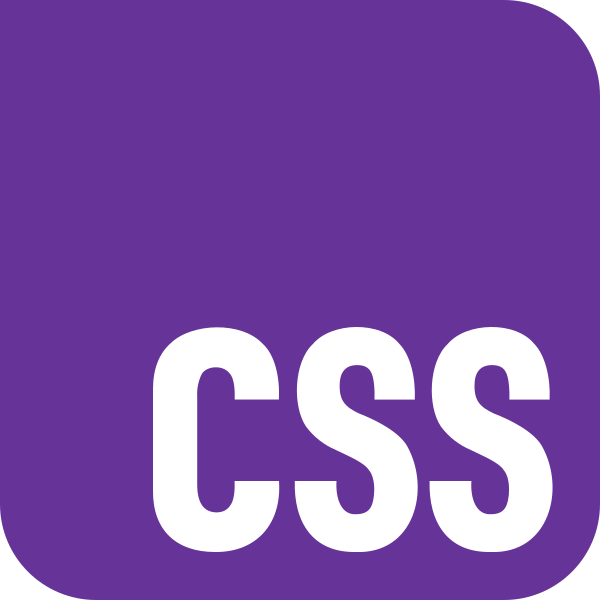
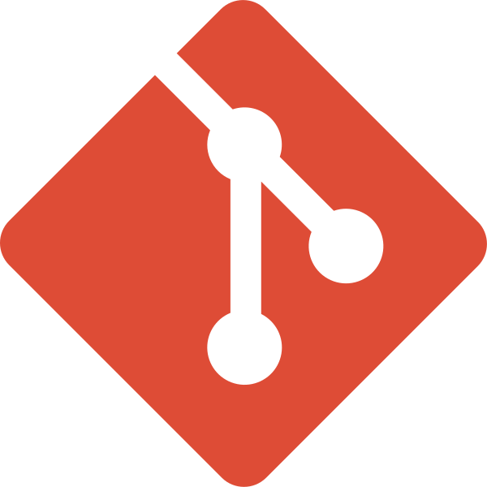

Análise e Desenvolvimento de Sistemas
SENAC DF
Cursando
Sou Kaio Henrique, estudante de Análise e Desenvolvimento de Sistemas no SENAC e desenvolvedor em formação, apaixonado por tecnologia e pela criação de soluções eficientes.
Tenho como principal objetivo evoluir na área de desenvolvimento web, criando interfaces modernas, responsivas e intuitivas, sempre com atenção à experiência do usuário.
Atualmente, aprofundo meus conhecimentos em HTML, CSS, JavaScript e Python, transformando aprendizado em projetos práticos que fortalecem minhas habilidades técnicas e meu raciocínio como desenvolvedor.
Este portfólio representa minha trajetória, meus principais conhecimentos e a dedicação que aplico em cada etapa do meu crescimento profissional na área de tecnologia.

Formação, cursos e habilidades que fazem parte da minha jornada em tecnologia.
Sou estudante de Análise e Desenvolvimento de Sistemas no SENAC DF e desenvolvedor em formação, com interesse em desenvolvimento web e tecnologia. Busco transformar conhecimento em soluções digitais úteis e continuar evoluindo por meio de projetos e aprendizado constante.
SENAC DF
Cursando
SENAC
Técnico no ensino médio em T.I. · concluído em 2025
Espaço reservado para adicionar futuras formações.
Concluído em 2025
Concluído em 2025
Concluído em 2026
Conheça alguns projetos que desenvolvi ao longo da minha jornada em tecnologia, explorando diferentes linguagens, ferramentas e soluções.
As prévias são conceituais. Os links de visualização e repositório poderão ser adicionados quando os endereços estiverem disponíveis.

Quiz para testar conhecimentos em Python e praticar conceitos da linguagem.
Este projeto só pode ser visualizado no terminal.

Site comercial para uma marca de pudins e sobremesas, com foco na apresentação dos produtos.

Jogo educativo em que o usuário identifica bandeiras de diferentes países. Projeto final de JavaScript com foco em lógica de programação.
Site desenvolvido para apresentar minha trajetória, habilidades, experiências e projetos na área de tecnologia.
Aplicação de gerenciamento de tarefas (To-do List), com foco na organização e em funcionalidades interativas feitas com JavaScript.

CSS3 JavaScript
JavaScript Python
Python
GitMeu portfólio está em constante evolução. Novos projetos, experiências e aprendizados serão adicionados ao longo da minha jornada na tecnologia.
Tem alguma oportunidade, projeto ou ideia interessante? Estou sempre aberto a novos desafios, conexões e oportunidades de aprendizado. Entre em contato comigo!
Estou em busca de oportunidades para desenvolver minhas habilidades na área de Tecnologia da Informação, adquirir experiência profissional e contribuir com novos projetos.